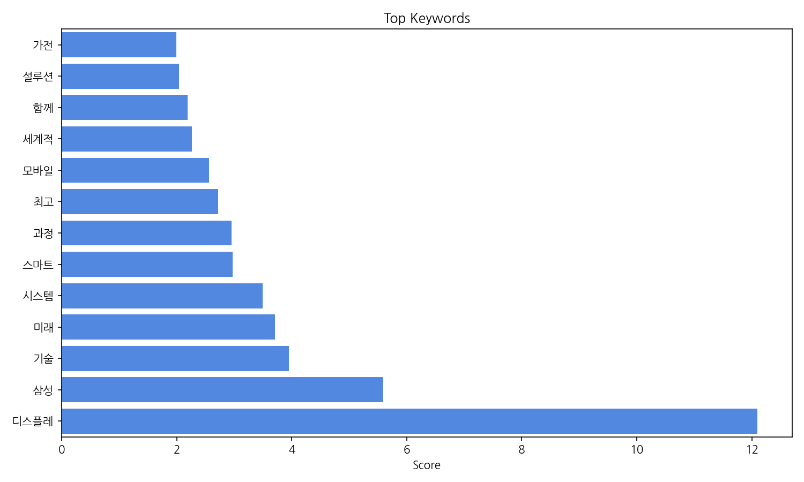
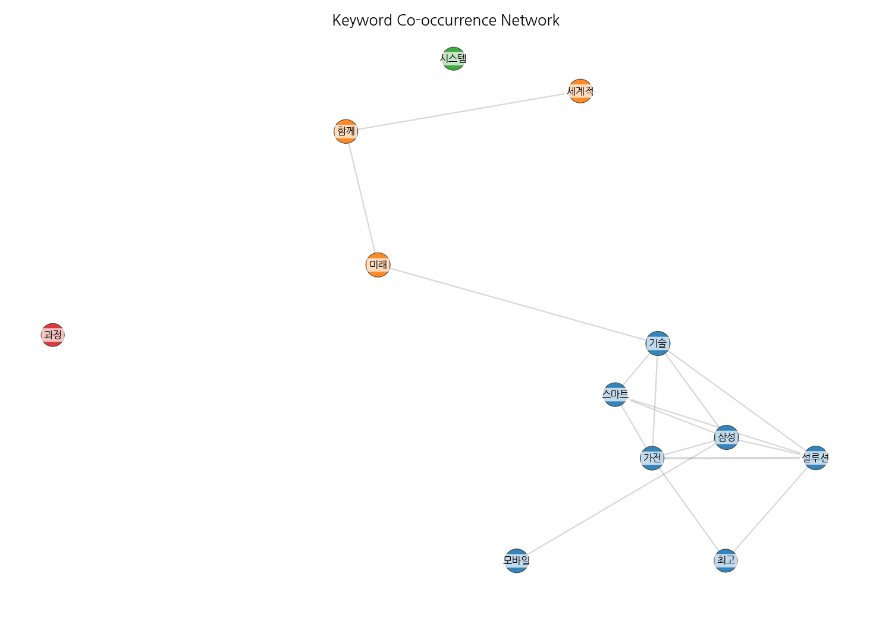
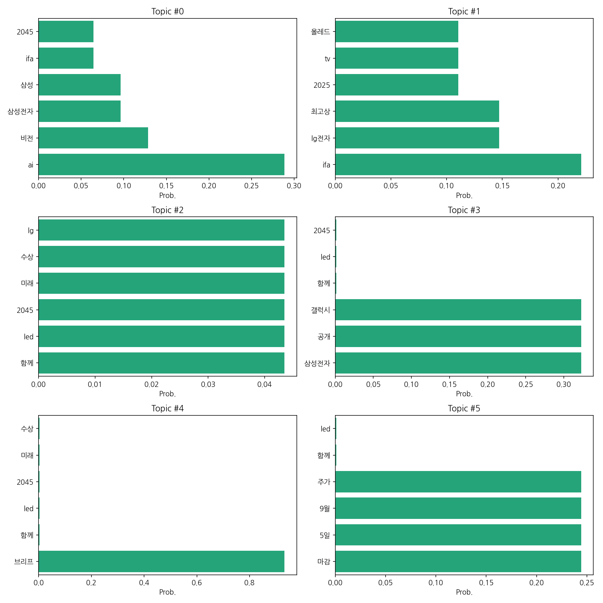
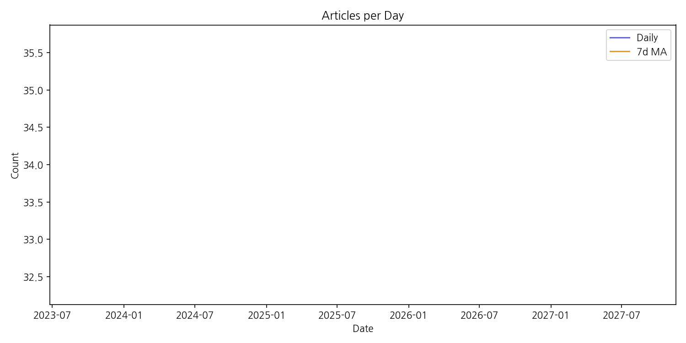

1) 상위 토픽들을 묶어 핵심 맥락을 설명하면, 2025년 IFA(국제가전박람회)에서 삼성전자와 LG전자의 AI 및 TV 기술 경쟁과 수상 소식이 주요 뉴스를 이루고 있습니다. 특히, AI 비전 기술과 차세대 디스플레이(OLED, LED)를 중심으로 미래 기술 경쟁력을 선보이고자 하는 양사의 노력이 집중적으로 보도되었습니다. 이는 2045년 미래를 향한 기술 투자와 시장 선점 경쟁을 반영하는 것입니다.
2) 최근 변화/스파이크는 2025년 9월 5일 IFA 행사 기간에 기사 수가 34건으로 집중적으로 발생했습니다. 이는 IFA 행사의 영향으로 삼성전자와 LG전자 관련 뉴스가 급증한 것을 의미합니다.
3) 실무 인사이트 3가지:
| Rank | Keyword | Score |
|---|---|---|
| 1 | 디스플레 | 12.093 |
| 2 | 삼성 | 5.588 |
| 3 | 기술 | 3.954 |
| 4 | 미래 | 3.709 |
| 5 | 시스템 | 3.497 |
| 6 | 스마트 | 2.972 |
| 7 | 과정 | 2.953 |
| 8 | 최고 | 2.719 |
| 9 | 모바일 | 2.559 |
| 10 | 세계적 | 2.262 |
| 11 | 함께 | 2.193 |
| 12 | 설루션 | 2.038 |
| 13 | 가전 | 1.993 |




1) 상위 토픽들을 묶어 핵심 맥락을 설명하면, 2025년 IFA(국제가전박람회)에서 삼성전자와 LG전자의 AI 및 TV 기술 경쟁과 수상 소식이 주요 뉴스를 이루고 있습니다. 특히, AI 비전 기술과 차세대 디스플레이(OLED, LED)를 중심으로 미래 기술 경쟁력을 선보이고자 하는 양사의 노력이 집중적으로 보도되었습니다. 이는 2045년 미래를 향한 기술 투자와 시장 선점 경쟁을 반영하는 것입니다.
2) 최근 변화/스파이크는 2025년 9월 5일 IFA 행사 기간에 기사 수가 34건으로 집중적으로 발생했습니다. 이는 IFA 행사의 영향으로 삼성전자와 LG전자 관련 뉴스가 급증한 것을 의미합니다.
3) 실무 인사이트 3가지:
| Idea | Target | Value Prop | Score |
|---|---|---|---|
| AI 기반의 디스플레이 패널 불량 검사 시스템 | 디스플레이 패널 제조업체, 반도체 장비 제조업체 | AI 기반의 자동화된 검사 시스템을 통해 생산성 향상 및 불량률 감소. 정확하고 효율적인 품질 관리를 통한 원가 절감. | 4.2 |
| 투명 OLED를 활용한 스마트 윈도우 솔루션 | 스마트빌딩 시공사, 대형 건설사, 고급 주택 건설업체, 사무실 임대 사업자 | 투명 OLED를 활용하여 에너지 효율을 높이고, 개인 맞춤형 조명 및 정보 디스플레이 기능을 제공하는 스마트 윈도우. 건물 외관 디자인 개선 및 정보 접근성 향상을 통한 차별화된 가치 제공. | 4.0 |
| AI 기반의 맞춤형 디스플레이 광고 플랫폼 | 대형 쇼핑몰, 백화점, 영화관, 공항 등의 광고주, 디지털 사이니지 운영 업체 | AI 기반의 실시간 데이터 분석을 통해 타겟 고객에게 최적화된 광고를 제공하는 플랫폼. 정확한 광고 효과 측정 및 개인정보 보호를 위한 솔루션 제공. | 3.8 |
| 홀로그램 기술을 적용한 차세대 모바일 디스플레이 | 프리미엄 스마트폰 제조사, 모바일 게임 개발사, AR/VR 콘텐츠 제작사 | 홀로그램 기술을 적용하여 현실감 넘치는 3D 영상을 제공하는 차세대 모바일 디스플레이. 몰입도 높은 사용 경험 제공을 통한 차별화된 가치 제안. | 3.5 |
| 맞춤형 LED 조명 시스템을 갖춘 스마트 가구 | 가구 제조업체, 인테리어 업체, 고급 주택 소비자 | 맞춤형 LED 조명 시스템을 탑재하여 분위기 연출 및 집중도 향상에 도움을 주는 스마트 가구. 스마트홈 시스템과의 연동을 통한 편리성 제공. | 3.2 |